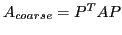

Next: About this document ...
Jacob B. Schroder
Non-Galerkin Coarse-Grid Operators for Parallel Algebraic Multigrid
Lawrence Livermore National Laboratory
Box 808
L-561
Livermore
CA 94551-0808
schroder2@llnl.gov
Robert F. Falgout
While algebraic multigrid (AMG) has been effectively implemented for parallel
machines, challenges remain, especially when moving to exascale. In
particular, as problem size and the corresponding number of multigrid levels both
increase, it is typical for the density of coarse-grid operators to also
increase. This coarse-grid fill-in is a result of the standard Galerkin
coarse-grid operator,

, where  is the prolongation
(i.e., interpolation) operator. This triple matrix product can increase the
density by coupling most distance-two and many distance-three connections in
the graph of
is the prolongation
(i.e., interpolation) operator. This triple matrix product can increase the
density by coupling most distance-two and many distance-three connections in
the graph of  . The result is that as problem size increases, denser
coarse-grid matrices are produced, and the communication pattern and overall
parallel AMG scheme become less efficient. To address this, we consider a
general stencil collapsing technique that eliminates non-zeros in the Galerkin
operator. The chosen sparsity pattern is based on distance-two connections in
the graph of
. The collapsing technique is general, in that it can be
adjusted to the specific problem type through user-provided near nullspace
modes, e.g., the constant for diffusion and rigid-body-modes for elasticity.
The resulting method produces a non-Galerkin coarse-grid and is effective at
controlling coarse-grid density and maintaining good AMG convergence rates. The
talk concludes with supporting parallel numerical results.
. The result is that as problem size increases, denser
coarse-grid matrices are produced, and the communication pattern and overall
parallel AMG scheme become less efficient. To address this, we consider a
general stencil collapsing technique that eliminates non-zeros in the Galerkin
operator. The chosen sparsity pattern is based on distance-two connections in
the graph of
. The collapsing technique is general, in that it can be
adjusted to the specific problem type through user-provided near nullspace
modes, e.g., the constant for diffusion and rigid-body-modes for elasticity.
The resulting method produces a non-Galerkin coarse-grid and is effective at
controlling coarse-grid density and maintaining good AMG convergence rates. The
talk concludes with supporting parallel numerical results.
Next: About this document ...
Copper Mntn
2013-01-30